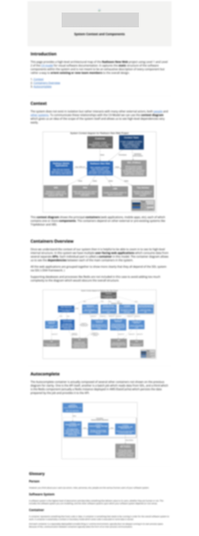

Consider Technical Documentation
I’ve worked in projects where huge amounts of detailed documentation was written and diligently maintained. I’ve also worked on projects where no documentation was written whatsoever. Both extremes have their advantages and disadvantages but, as with most things, there is usually a balance to be found somewhere in the middle. Finding where that sweet spot is can be really hard.
Early in my career I had the dubious pleasure of using such tools as Rational Rose and ArgoUML to produce detailed technical diagrams using UML1. It can work well if proper modularity is maintained by disciplined teams. In these cases it facilitates a common technical understanding which in turn leads to better technical discussions and consequently better decisions overall. This is a flavour of the case in favour.
1 I’ll also give a shout out to a very nice little tool called ObjectAid which enabled bi-directional modification between diagram and code. It’s nice for simple designs but try reverse-engineering anything more complex  .
.
In other teams, on the other hand, diagrams of real systems can very easily become unworkable or difficult to understand. Complex diagrams often mean you can’t see the wood for the trees. The documentation itself can also become costly to maintain and is often forgotten when the system changes becoming out of date and worse than useless. This is the case against and my feeling is that it has gained traction in recent years.
For example, in one recent project very little technical documentation was being written, for which the initial positive effect was to enable the project to advance very quickly. As the system became more complex, however, it led to misunderstandings within the team and difficulty for new team members to pick up the system easily. I also felt that it led to a communication gap with no shared vision to guide decisions. It seemed to me that some level of documentation would be of value. Step up the C4 Model.
C4 Model
Simon Brown’s C4 Model tries to address some of the genuine concerns about unmanageable documentation by providing guidelines for visualising systems with information which is useful at different levels of detail. It also provides some templates for useful diagramming styles.
I thought there was an opportunity to apply some of those ideas in this project but before spending too much time on it the idea was discussed with the various stakeholders. Initial worries about maintenance were waylaid in several ways.
Firstly we decided to schedule a regular review in an existing fortnightly technical update. Some discipline is required in the process to ensure this actually happens.
Secondly, following the Law of Diminishing Returns, we aimed for maximising the ROI by only using the first two levels of detail in the documentation2 (more on that below).
2 Compare to Alistair Cockburn’s concept of sufficiency and Scott Ambler’s JBGE.
Finally, we used a text based diagramming tool: PlantUML in conjunction with Ricardo Niepel’s C4 macros, automating its execution and the subsequent publication.
Then we could work on the documentation itself and this was the result (blurred to maintain confidentiality).

The document consists of a standard HTML page and several PlantUML generated diagrams with a narrative running through it, including a short description of the content of the document, the format and its purpose.The top level includes a context diagram showing the system in the context of the main actors and the principal external dependencies.
It then goes on to include container diagrams which zoom into the system and show more of its internal structure.
Further levels of detail from component and class diagrams were omitted, not because they are not valuable but rather because they typically take longer to produce and have the highest maintenance costs, and those costs were considered to outweigh the potential returns at the time (something which may be revisited).
I won’t go into too much detail about the diagrams, a lot of great information is available on the C4 Model website.
To facilitate easy maintenance I tried not to repeat information contained in the diagrams in the text and vice-versa. The narrative is an important part of the document but one of the strengths of the C4 model over UML is the extra information within the diagram itself and that information does not need to be duplicated.
It is very important to think very carefully about the detail shown at each level. For this reason it may be necessary to split sub-systems into separate diagrams at the same level. Without care the diagrams can become very complex very fast. This exercise makes patently clear the dependencies between the different containers and any associated problems.
The initial feedback from the team was very positive with the strongest approval from new team members. Having a single, easily digestible resource which summarised the system context and cryptic naming of external dependencies turned out to he highly valuable. I even noticed that one new guy had it open in a tab all day and continually referred back to it. Several people also helpfully corrected errors.
Another fallout from the documentation was that it immediately (maybe too immediately!) provided a focal point for design discussion. This is a key point about this kind of documentation, rather than just being a system blueprint it actually fosters a common understanding. That common understanding and shared experience is vital to sustain a global technical vision for the whole team and facilitate effective communication.
The overall outcome of this exercise was clearly positive but some things remain open ended.
I’ve already mentioned that getting the right level of detail is difficult. Is there enough value in each level of documentation and how can we measure it? What happens when the diagram becomes too unwieldy?
Also there are inherent trade-offs using auto-generated diagrams. On the positive side they are much easier to edit and maintain. On the downside we tend to lose fine grained control over placement of elements and adding a single element can even change the layout completely.
Conclusions
Technical documentation for software projects must be considered in the context of the team and its needs.
Consider the audience for the documentation and the value it provides them. Some projects will need to deliver it as part of the deliverables of the project, others will use it only internally. Operational needs may require a different focus to that required by development teams.
Don’t add detail that is not necessary. That effort may be wasted or, worse, justify not using it. Remember the Law of Diminishing Returns.
Consider how to ensure the documentation remains up to date. Either by including it in the workflow or reviewing it regularly.
Think about the trade-offs of different diagramming methods and tools. I chose PlantUML for its simplicity and text-based interface but also consider more powerful modelling tools.
I believe that these kinds of considerations are part of any teams technical responsibilities. Tools like PlantUML and the C4 model can help us but in the end it’s a skill that must be practised like any other.